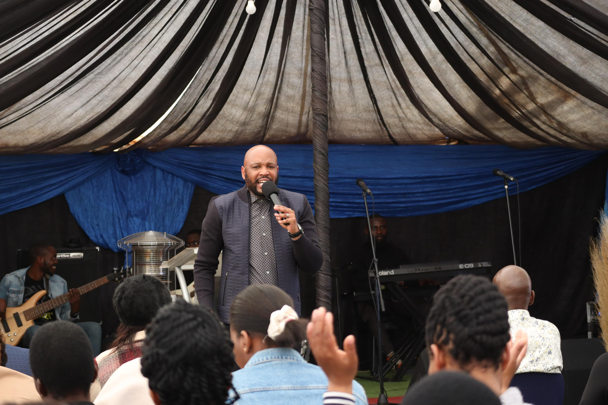

Our Services
Intercession

Our congregation gathers for a powerful time of intercession led by our dedicated church leadership. Here, we seek God's face, lifting up prayers of praise, thanksgiving, and petition, aligning our hearts with His will for our lives and our community.
- Time: 9:00 AM to 10:00 AM
- Location: 567 Bennet Avenue, Zuurebekom, Westoneria
- Details: Includes worship music, prayer for healing, and biblical teaching.
Praise and Worship Service

Following intercession, our vibrant praise and worship service commences. Led by our anointed church choir, we enter into a time of joyful adoration, lifting our voices and instruments in worship to the King of Kings. Through songs of praise and declarations of His goodness, we prepare our hearts to receive the word of God with open minds and receptive spirits.
Word Services
Guided by Apostle Moses Phakula or one of our seasoned church leaders, our word service delves deep into the riches of Scripture, unveiling timeless truths and practical insights for victorious living. With a commitment to expository preaching and Spirit-led teaching, we explore God's word with reverence and relevance, allowing it to illuminate our paths and transform our lives.
Spirit Service

As the culmination of our Sunday services, our Spirit service is a sacred time of encounter with the Holy Spirit. Led by Apostle Moses Phakula, this segment invites believers to experience the manifest presence of God in a tangible way, as we yield ourselves to His leading and empowerment. Through prophetic utterances, spiritual gifts, and moments of divine impartation, we are refreshed, empowered, and equipped to walk boldly in our calling as sons and daughters of the Most High..
Children's Ministry

Sunday School: While adults engage in the main services, children below the age of fifteen are welcomed into our vibrant Sunday School program. With a curriculum designed to teach biblical truths in an engaging and age-appropriate manner, our dedicated team of teachers and volunteers nurture the faith of the next generation, equipping them to become strong disciples of Christ. From interactive lessons to creative activities and fellowship, our Sunday School ensures that every child experiences the love of Jesus in a safe and supportive environment.